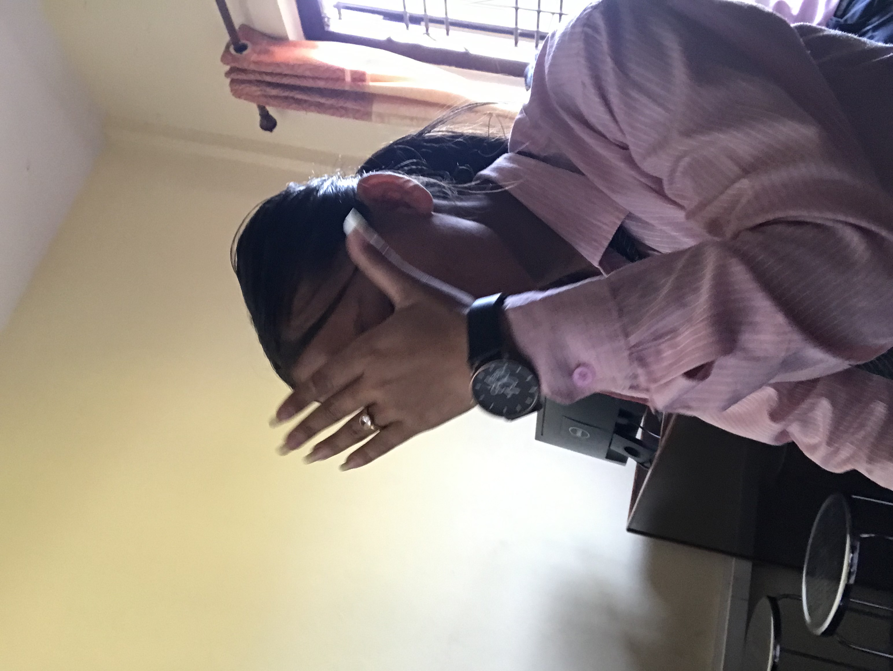

Hi, I am Anu Darji
at Janasewa Secondary School in grade 11.
I live in Sunwal-1 pargatitol,Nepal.
I am 17 years old . I am learning HTML/CSS Because
After I will make a project website for (computer science) practical sothat our computer
science practical is complet. This is my first
practical website for Demo. After we make a good
website for final project for class 11 (science).
and complete home skills about and contact page.
then we manage HTML/CSS color,Design,everything
for website.This is lap work practical and project
website.
Computer Science for the partial fulfillment of final examination of grade 11. This lab work includes the basic of mock design, design in figma and implementation using HTML/CSS which could be deployable.